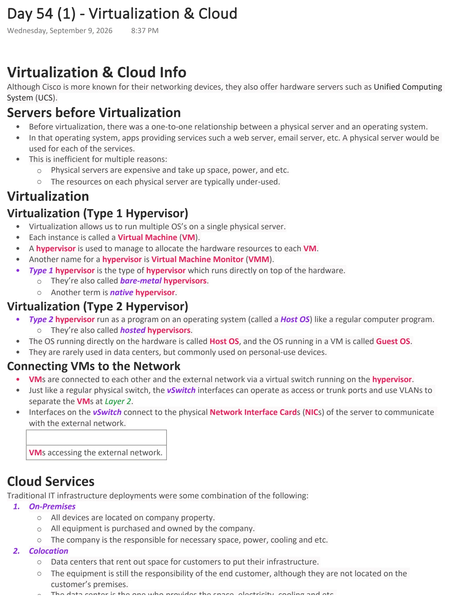
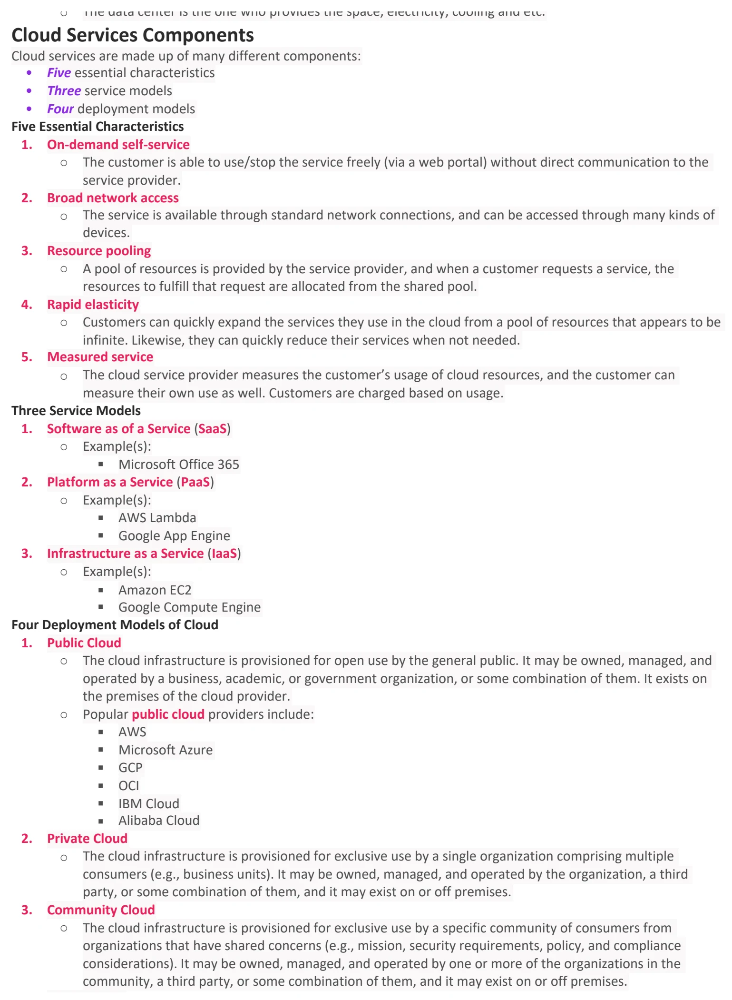
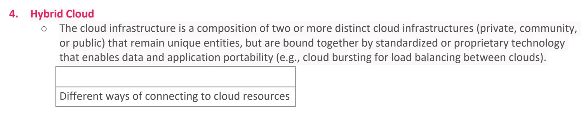
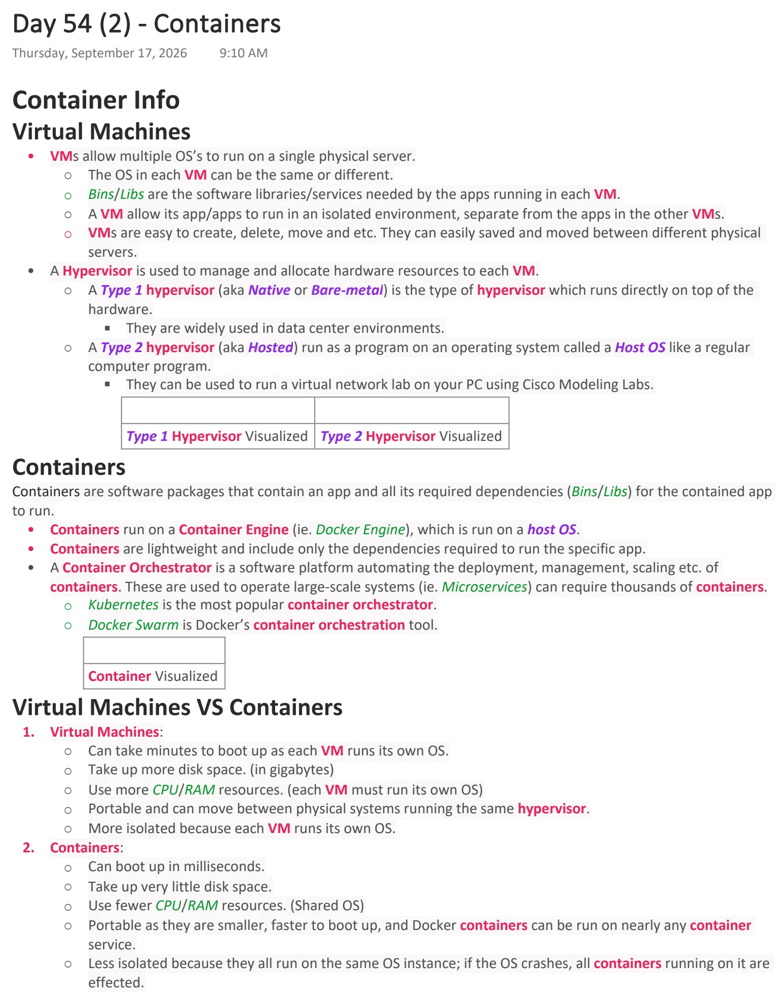
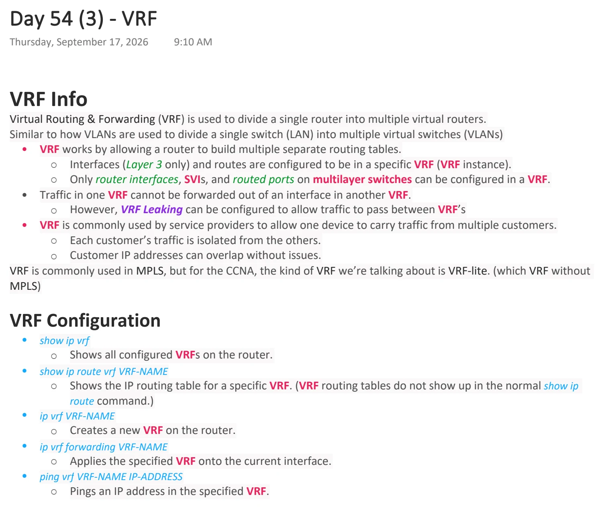

Virtualization & Cloud
Download original PDF


Text view — Virtualization & Cloud
Extracted from the original export. Diagrams and some formatting appear in the notes above.
Day 54 (1) - Virtualization & Cloud Wednesday, September 9, 2026 8:37 PM Virtualization & Cloud Info Although Cisco is more known for their networking devices, they also offer hardware servers such as Unified Computing System (UCS). Servers before Virtualization • Before virtualization, there was a one-to-one relationship between a physical server and an operating system. • In that operating system, apps providing services such a web server, email server, etc. A physical server would be used for each of the services. • This is inefficient for multiple reasons: ○ Physical servers are expensive and take up space, power, and etc. ○ The resources on each physical server are typically under-used. Virtualization Virtualization (Type 1 Hypervisor) • Virtualization allows us to run multiple OS’s on a single physical server. • Each instance is called a Virtual Machine (VM). • A hypervisor is used to manage to allocate the hardware resources to each VM. • Another name for a hypervisor is Virtual Machine Monitor (VMM). • Type 1 hypervisor is the type of hypervisor which runs directly on top of the hardware. ○ They’re also called bare-metal hypervisors. ○ Another term is native hypervisor. Virtualization (Type 2 Hypervisor) • Type 2 hypervisor run as a program on an operating system (called a Host OS) like a regular computer program. ○ They’re also called hosted hypervisors. • The OS running directly on the hardware is called Host OS, and the OS running in a VM is called Guest OS. • They are rarely used in data centers, but commonly used on personal-use devices. Connecting VMs to the Network • VMs are connected to each other and the external network via a virtual switch running on the hypervisor. • Just like a regular physical switch, the vSwitch interfaces can operate as access or trunk ports and use VLANs to separate the VMs at Layer 2. • Interfaces on the vSwitch connect to the physical Network Interface Cards (NICs) of the server to communicate with the external network. VMs accessing the external network. Cloud Services Traditional IT infrastructure deployments were some combination of the following: 1. On-Premises ○ All devices are located on company property. ○ All equipment is purchased and owned by the company. ○ The company is the responsible for necessary space, power, cooling and etc. 2. Colocation ○ Data centers that rent out space for customers to put their infrastructure. ○ The equipment is still the responsibility of the end customer, although they are not located on the customer’s premises. ○ The data center is the one who provides the space, electricity, cooling and etc. Cloud Services Components Cloud services are made up of many different components: • Five essential characteristics • Three service models • Four deployment models Five Essential Characteristics 1. On-demand self-service ○ The customer is able to use/stop the service freely (via a web portal) without direct communication to the service provider. 2. Broad network access ○ The service is available through standard network connections, and can be accessed through many kinds of devices. 3. Resource pooling ○ A pool of resources is provided by the service provider, and when a customer requests a service, the resources to fulfill that request are allocated from the shared pool. 4. Rapid elasticity ○ Customers can quickly expand the services they use in the cloud from a pool of resources that appears to be infinite. Likewise, they can quickly reduce their services when not needed. 5. Measured service ○ The cloud service provider measures the customer’s usage of cloud resources, and the customer can measure their own use as well. Customers are charged based on usage. Three Service Models 1. Software as of a Service (SaaS) ○ Example(s): § Microsoft Office 365 2. Platform as a Service (PaaS) ○ Example(s): § AWS Lambda § Google App Engine 3. Infrastructure as a Service (IaaS) ○ Example(s): § Amazon EC2 § Google Compute Engine Four Deployment Models of Cloud 1. Public Cloud ○ The cloud infrastructure is provisioned for open use by the general public. It may be owned, managed, and operated by a business, academic, or government organization, or some combination of them. It exists on the premises of the cloud provider. ○ Popular public cloud providers include: § AWS § Microsoft Azure § GCP § OCI § IBM Cloud § Alibaba Cloud 2. Private Cloud ○ The cloud infrastructure is provisioned for exclusive use by a single organization comprising multiple consumers (e.g., business units). It may be owned, managed, and operated by the organization, a third party, or some combination of them, and it may exist on or off premises. 3. Community Cloud ○ The cloud infrastructure is provisioned for exclusive use by a specific community of consumers from organizations that have shared concerns (e.g., mission, security requirements, policy, and compliance considerations). It may be owned, managed, and operated by one or more of the organizations in the community, a third party, or some combination of them, and it may exist on or off premises. 4. Hybrid Cloud ○ The cloud infrastructure is a composition of two or more distinct cloud infrastructures (private, community, or public) that remain unique entities, but are bound together by standardized or proprietary technology that enables data and application portability (e.g., cloud bursting for load balancing between clouds). Different ways of connecting to cloud resources Day 54 (1) - Virtualization & Cloud Wednesday, September 9, 2026 8:37 PM Virtualization & Cloud Info Although Cisco is more known for their networking devices, they also offer hardware servers such as Unified Computing System (UCS). Servers before Virtualization • Before virtualization, there was a one-to-one relationship between a physical server and an operating system. • In that operating system, apps providing services such a web server, email server, etc. A physical server would be used for each of the services. • This is inefficient for multiple reasons: ○ Physical servers are expensive and take up space, power, and etc. ○ The resources on each physical server are typically under-used. Virtualization Virtualization (Type 1 Hypervisor) • Virtualization allows us to run multiple OS’s on a single physical server. • Each instance is called a Virtual Machine (VM). • A hypervisor is used to manage to allocate the hardware resources to each VM. • Another name for a hypervisor is Virtual Machine Monitor (VMM). • Type 1 hypervisor is the type of hypervisor which runs directly on top of the hardware. ○ They’re also called bare-metal hypervisors. ○ Another term is native hypervisor. Virtualization (Type 2 Hypervisor) • Type 2 hypervisor run as a program on an operating system (called a Host OS) like a regular computer program. ○ They’re also called hosted hypervisors. • The OS running directly on the hardware is called Host OS, and the OS running in a VM is called Guest OS. • They are rarely used in data centers, but commonly used on personal-use devices. Connecting VMs to the Network • VMs are connected to each other and the external network via a virtual switch running on the hypervisor. • Just like a regular physical switch, the vSwitch interfaces can operate as access or trunk ports and use VLANs to separate the VMs at Layer 2. • Interfaces on the vSwitch connect to the physical Network Interface Cards (NICs) of the server to communicate with the external network. VMs accessing the external network. Cloud Services Traditional IT infrastructure deployments were some combination of the following: 1. On-Premises ○ All devices are located on company property. ○ All equipment is purchased and owned by the company. ○ The company is the responsible for necessary space, power, cooling and etc. 2. Colocation ○ Data centers that rent out space for customers to put their infrastructure. ○ The equipment is still the responsibility of the end customer, although they are not located on the customer’s premises. ○ The data center is the one who provides the space, electricity, cooling and etc. Cloud Services Components Cloud services are made up of many different components: • Five essential characteristics • Three service models • Four deployment models Five Essential Characteristics 1. On-demand self-service ○ The customer is able to use/stop the service freely (via a web portal) without direct communication to the service provider. 2. Broad network access ○ The service is available through standard network connections, and can be accessed through many kinds of devices. 3. Resource pooling ○ A pool of resources is provided by the service provider, and when a customer requests a service, the resources to fulfill that request are allocated from the shared pool. 4. Rapid elasticity ○ Customers can quickly expand the services they use in the cloud from a pool of resources that appears to be infinite. Likewise, they can quickly reduce their services when not needed. 5. Measured service ○ The cloud service provider measures the customer’s usage of cloud resources, and the customer can measure their own use as well. Customers are charged based on usage. Three Service Models 1. Software as of a Service (SaaS) ○ Example(s): § Microsoft Office 365 2. Platform as a Service (PaaS) ○ Example(s): § AWS Lambda § Google App Engine 3. Infrastructure as a Service (IaaS) ○ Example(s): § Amazon EC2 § Google Compute Engine Four Deployment Models of Cloud 1. Public Cloud ○ The cloud infrastructure is provisioned for open use by the general public. It may be owned, managed, and operated by a business, academic, or government organization, or some combination of them. It exists on the premises of the cloud provider. ○ Popular public cloud providers include: § AWS § Microsoft Azure § GCP § OCI § IBM Cloud § Alibaba Cloud 2. Private Cloud ○ The cloud infrastructure is provisioned for exclusive use by a single organization comprising multiple consumers (e.g., business units). It may be owned, managed, and operated by the organization, a third party, or some combination of them, and it may exist on or off premises. 3. Community Cloud ○ The cloud infrastructure is provisioned for exclusive use by a specific community of consumers from organizations that have shared concerns (e.g., mission, security requirements, policy, and compliance considerations). It may be owned, managed, and operated by one or more of the organizations in the community, a third party, or some combination of them, and it may exist on or off premises. 4. Hybrid Cloud ○ The cloud infrastructure is a composition of two or more distinct cloud infrastructures (private, community, or public) that remain unique entities, but are bound together by standardized or proprietary technology that enables data and application portability (e.g., cloud bursting for load balancing between clouds). Different ways of connecting to cloud resources Day 54 (1) - Virtualization & Cloud Wednesday, September 9, 2026 8:37 PM Virtualization & Cloud Info Although Cisco is more known for their networking devices, they also offer hardware servers such as Unified Computing System (UCS). Servers before Virtualization • Before virtualization, there was a one-to-one relationship between a physical server and an operating system. • In that operating system, apps providing services such a web server, email server, etc. A physical server would be used for each of the services. • This is inefficient for multiple reasons: ○ Physical servers are expensive and take up space, power, and etc. ○ The resources on each physical server are typically under-used. Virtualization Virtualization (Type 1 Hypervisor) • Virtualization allows us to run multiple OS’s on a single physical server. • Each instance is called a Virtual Machine (VM). • A hypervisor is used to manage to allocate the hardware resources to each VM. • Another name for a hypervisor is Virtual Machine Monitor (VMM). • Type 1 hypervisor is the type of hypervisor which runs directly on top of the hardware. ○ They’re also called bare-metal hypervisors. ○ Another term is native hypervisor. Virtualization (Type 2 Hypervisor) • Type 2 hypervisor run as a program on an operating system (called a Host OS) like a regular computer program. ○ They’re also called hosted hypervisors. • The OS running directly on the hardware is called Host OS, and the OS running in a VM is called Guest OS. • They are rarely used in data centers, but commonly used on personal-use devices. Connecting VMs to the Network • VMs are connected to each other and the external network via a virtual switch running on the hypervisor. • Just like a regular physical switch, the vSwitch interfaces can operate as access or trunk ports and use VLANs to separate the VMs at Layer 2. • Interfaces on the vSwitch connect to the physical Network Interface Cards (NICs) of the server to communicate with the external network. VMs accessing the external network. Cloud Services Traditional IT infrastructure deployments were some combination of the following: 1. On-Premises ○ All devices are located on company property. ○ All equipment is purchased and owned by the company. ○ The company is the responsible for necessary space, power, cooling and etc. 2. Colocation ○ Data centers that rent out space for customers to put their infrastructure. ○ The equipment is still the responsibility of the end customer, although they are not located on the customer’s premises. ○ The data center is the one who provides the space, electricity, cooling and etc. Cloud Services Components Cloud services are made up of many different components: • Five essential characteristics • Three service models • Four deployment models Five Essential Characteristics 1. On-demand self-service ○ The customer is able to use/stop the service freely (via a web portal) without direct communication to the service provider. 2. Broad network access ○ The service is available through standard network connections, and can be accessed through many kinds of devices. 3. Resource pooling ○ A pool of resources is provided by the service provider, and when a customer requests a service, the resources to fulfill that request are allocated from the shared pool. 4. Rapid elasticity ○ Customers can quickly expand the services they use in the cloud from a pool of resources that appears to be infinite. Likewise, they can quickly reduce their services when not needed. 5. Measured service ○ The cloud service provider measures the customer’s usage of cloud resources, and the customer can measure their own use as well. Customers are charged based on usage. Three Service Models 1. Software as of a Service (SaaS) ○ Example(s): § Microsoft Office 365 2. Platform as a Service (PaaS) ○ Example(s): § AWS Lambda § Google App Engine 3. Infrastructure as a Service (IaaS) ○ Example(s): § Amazon EC2 § Google Compute Engine Four Deployment Models of Cloud 1. Public Cloud ○ The cloud infrastructure is provisioned for open use by the general public. It may be owned, managed, and operated by a business, academic, or government organization, or some combination of them. It exists on the premises of the cloud provider. ○ Popular public cloud providers include: § AWS § Microsoft Azure § GCP § OCI § IBM Cloud § Alibaba Cloud 2. Private Cloud ○ The cloud infrastructure is provisioned for exclusive use by a single organization comprising multiple consumers (e.g., business units). It may be owned, managed, and operated by the organization, a third party, or some combination of them, and it may exist on or off premises. 3. Community Cloud ○ The cloud infrastructure is provisioned for exclusive use by a specific community of consumers from organizations that have shared concerns (e.g., mission, security requirements, policy, and compliance considerations). It may be owned, managed, and operated by one or more of the organizations in the community, a third party, or some combination of them, and it may exist on or off premises. 4. Hybrid Cloud ○ The cloud infrastructure is a composition of two or more distinct cloud infrastructures (private, community, or public) that remain unique entities, but are bound together by standardized or proprietary technology that enables data and application portability (e.g., cloud bursting for load balancing between clouds). Different ways of connecting to cloud resources
Containers
Download original PDF
Text view — Containers
Extracted from the original export. Diagrams and some formatting appear in the notes above.
Day 54 (2) - Containers Thursday, September 17, 2026 9:10 AM Container Info Virtual Machines • VMs allow multiple OS’s to run on a single physical server. ○ The OS in each VM can be the same or different. ○ Bins/Libs are the software libraries/services needed by the apps running in each VM. ○ A VM allow its app/apps to run in an isolated environment, separate from the apps in the other VMs. ○ VMs are easy to create, delete, move and etc. They can easily saved and moved between different physical servers. • A Hypervisor is used to manage and allocate hardware resources to each VM. ○ A Type 1 hypervisor (aka Native or Bare-metal) is the type of hypervisor which runs directly on top of the hardware. § They are widely used in data center environments. ○ A Type 2 hypervisor (aka Hosted) run as a program on an operating system called a Host OS like a regular computer program. § They can be used to run a virtual network lab on your PC using Cisco Modeling Labs. Type 1 Hypervisor Visualized Type 2 Hypervisor Visualized Containers Containers are software packages that contain an app and all its required dependencies (Bins/Libs) for the contained app to run. • Containers run on a Container Engine (ie. Docker Engine), which is run on a host OS. • Containers are lightweight and include only the dependencies required to run the specific app. • A Container Orchestrator is a software platform automating the deployment, management, scaling etc. of containers. These are used to operate large-scale systems (ie. Microservices) can require thousands of containers. ○ Kubernetes is the most popular container orchestrator. ○ Docker Swarm is Docker’s container orchestration tool. Container Visualized Virtual Machines VS Containers 1. Virtual Machines: ○ Can take minutes to boot up as each VM runs its own OS. ○ Take up more disk space. (in gigabytes) ○ Use more CPU/RAM resources. (each VM must run its own OS) ○ Portable and can move between physical systems running the same hypervisor. ○ More isolated because each VM runs its own OS. 2. Containers: ○ Can boot up in milliseconds. ○ Take up very little disk space. ○ Use fewer CPU/RAM resources. (Shared OS) ○ Portable as they are smaller, faster to boot up, and Docker containers can be run on nearly any container service. ○ Less isolated because they all run on the same OS instance; if the OS crashes, all containers running on it are effected.
VRF
Download original PDF
Text view — VRF
Extracted from the original export. Diagrams and some formatting appear in the notes above.
Day 54 (3) - VRF Thursday, September 17, 2026 9:10 AM VRF Info Virtual Routing & Forwarding (VRF) is used to divide a single router into multiple virtual routers. Similar to how VLANs are used to divide a single switch (LAN) into multiple virtual switches (VLANs) • VRF works by allowing a router to build multiple separate routing tables. ○ Interfaces (Layer 3 only) and routes are configured to be in a specific VRF (VRF instance). ○ Only router interfaces, SVIs, and routed ports on multilayer switches can be configured in a VRF. • Traffic in one VRF cannot be forwarded out of an interface in another VRF. ○ However, VRF Leaking can be configured to allow traffic to pass between VRF’s • VRF is commonly used by service providers to allow one device to carry traffic from multiple customers. ○ Each customer’s traffic is isolated from the others. ○ Customer IP addresses can overlap without issues. VRF is commonly used in MPLS, but for the CCNA, the kind of VRF we’re talking about is VRF-lite. (which VRF without MPLS) VRF Configuration • show ip vrf ○ Shows all configured VRFs on the router. • show ip route vrf VRF-NAME ○ Shows the IP routing table for a specific VRF. (VRF routing tables do not show up in the normal show ip route command.) • ip vrf VRF-NAME ○ Creates a new VRF on the router. • ip vrf forwarding VRF-NAME ○ Applies the specified VRF onto the current interface. • ping vrf VRF-NAME IP-ADDRESS ○ Pings an IP address in the specified VRF.